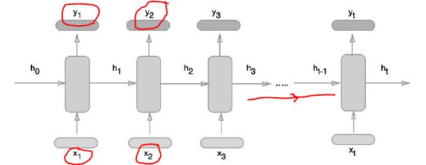

TensorFlow - Recurrent Neural Networks
What is Recurrent Neural Networks ?
Recurrent neural networks are deep learning algorithm, which follows a sequential approach. We always assume that each input and output is independent of all other layers. These are called recurrent because they perform mathematical computations in sequential manner.
To train a recurrent neural network we have to follow following steps:
Step 1 − Input an example from dataset.
Step 2 − Network will take an example from dataset and compute some calculations using randomly initialized variables.
Step 3 − A predicted result is then computed.
Step 4 − Now we do comparison of actual result generated with the expected value. We will get an error. There comes the work.
Step 5 − To trace the error, it is propagated through same path where the variables are also adjusted.
Step 6 − Repeat steps from 1 to 5, until we are confident that the variables declared to get the output are defined properly.
Step 7 − Now we are ready to do prediction by applying these variables to get new unseen input.
Have a look at the diagram to understand the system.

Implementing Recurrent Neural Networks using TensorFlow
Now that we have talked about what are RNN and how they work. Let's try implementing them in TensorFLow. To do so, we have variours libraries in TensorFlow.
Step 1 - Import Libraries.
from __future__ import print_function
import tensorflow as tf
from tensorflow.contrib import rnn
from tensorflow.examples.tutorials.mnist import input_data
mnist = input_data.read_data_sets("/tmp/data/", one_hot = True)
Libraries help in defining the input data, which forms the primary part of recurrent neural network implementation.
Step 2 − Before we move ahead, let me tell you what we are doing here is, we are trying to classify the images using a recurrent neural network, where we consider every image row as a sequence of pixels. MNIST image shape is specifically defined as 28*28 px. Now we will handle 28 sequences of 28 steps for each sample that is mentioned. We will define the input parameters to get the sequential pattern done.
# MNIST data input with image of shape 28*28
n_input = 28
n_steps = 28
n_hidden = 128
n_classes = 10
# Graph input to TensorFlow
x = tf.placeholder("float", [None, n_steps, n_input])
y = tf.placeholder("float", [None, n_classes]
weights = {
'out': tf.Variable(tf.random_normal([n_hidden, n_classes]))
}
biases = {
'out': tf.Variable(tf.random_normal([n_classes]))
}
Step 3 − Now, we'll compute the results using a defined function in RNN to get the best results. Here, each data shape is compared with current input shape and the results are computed to maintain the accuracy rate.
def RNN(x, weights, biases):
x = tf.unstack(x, n_steps, 1)
# Define a lstm cell with tensorflow
lstm_cell = rnn.BasicLSTMCell(n_hidden, forget_bias=1.0)
# Get lstm cell output
outputs, states = rnn.static_rnn(lstm_cell, x, dtype = tf.float32)
# Linear activation, using rnn inner loop last output
return tf.matmul(outputs[-1], weights['out']) + biases['out']
pred = RNN(x, weights, biases)
# Define loss and optimizer
cost = tf.reduce_mean(tf.nn.softmax_cross_entropy_with_logits(logits = pred, labels = y))
optimizer = tf.train.AdamOptimizer(learning_rate = learning_rate).minimize(cost)
# Evaluate model
correct_pred = tf.equal(tf.argmax(pred,1), tf.argmax(y,1))
accuracy = tf.reduce_mean(tf.cast(correct_pred, tf.float32))
# Initializing the variables
init = tf.global_variables_initializer()
Step 4 − Finally, we will launch the graph to get the computational results. This also helps in calculating the accuracy for test results.
with tf.Session() as sess:
sess.run(init)
step = 1
# Keep training until reach max iterations
while step * batch_size < training_iters:
batch_x, batch_y = mnist.train.next_batch(batch_size)
batch_x = batch_x.reshape((batch_size, n_steps, n_input))
sess.run(optimizer, feed_dict={x: batch_x, y: batch_y})
if step % display_step == 0:
# Calculate batch accuracy
acc = sess.run(accuracy, feed_dict={x: batch_x, y: batch_y})
# Calculate batch loss
loss = sess.run(cost, feed_dict={x: batch_x, y: batch_y})
print("Iter " + str(step*batch_size) + ", Minibatch Loss= " + \
"{:.6f}".format(loss) + ", Training Accuracy= " + \
"{:.5f}".format(acc))
step += 1
print("Optimization Done!")
test_len = 128
test_data = mnist.test.images[:test_len].reshape((-1, n_steps, n_input))
test_label = mnist.test.labels[:test_len]
print("Testing Accuracy:", \
sess.run(accuracy, feed_dict={x: test_data, y: test_label}))
So that was RNN in TesorFlow. When you are writing code to implement things in TesorFlow.. try to keep a repository for this. and run files with their name.
In next tutorial, we'll learn about TensorBoard visualization.
No problems available for this topic.